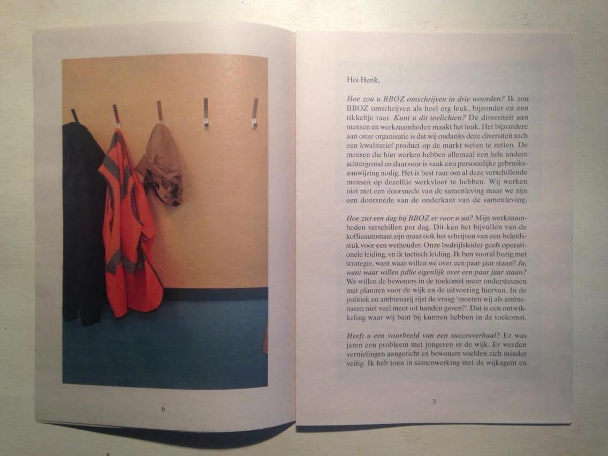
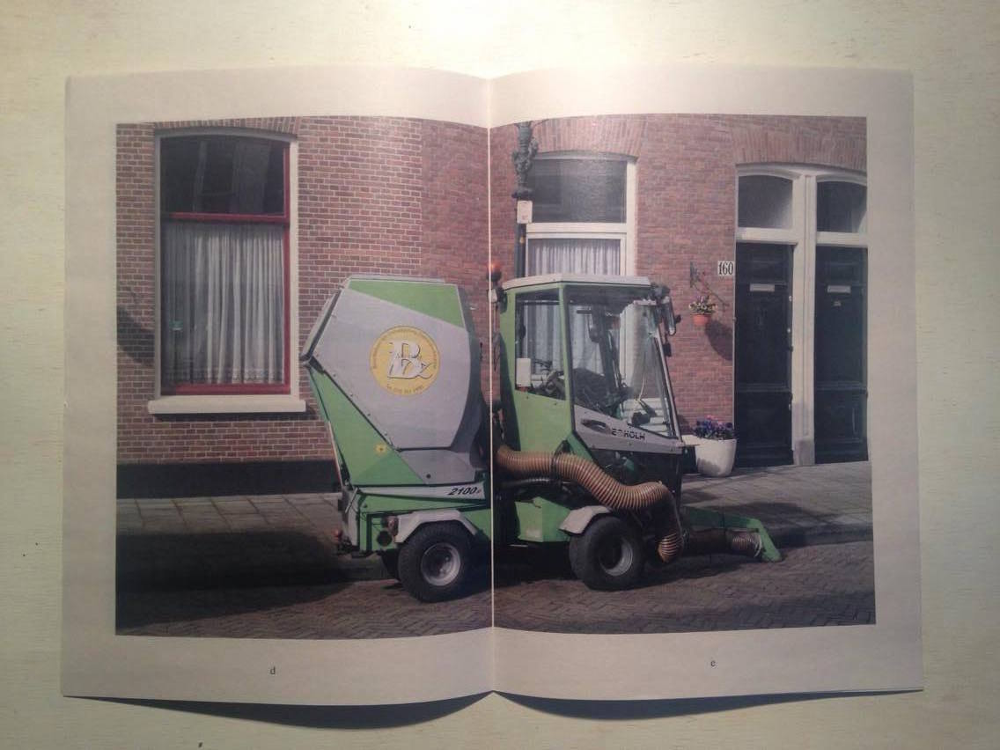
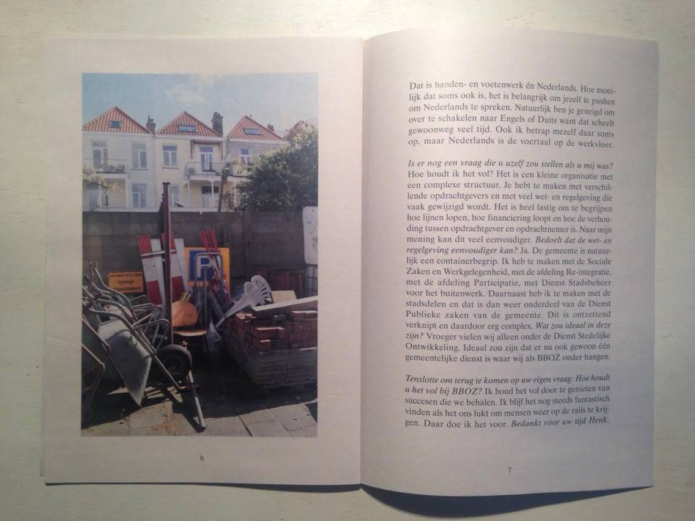

Great concept... Now what?
THEORY
Nowadays, graphic design education places great emphasis on the conceptual and theoretical aspects of design. But no matter what, it rarely comes to a real design (strategy) positioned in our reality. I have the desire to implement my designs in the real world and see if my ideas actually work. Therefore, I researched the way graphic design is applied in practice.
How can you generate a positive effect in the real world with your design skills?
To get a better insight I did literature research and interviewed experts. I analysed different (graphic design) projects and compared these case studies.
To have an impact, we should put our design ideas out there, in the real world, and see what happens.
A group of adolescents wander around a city. They talk about very complicated and substantial matter. It is hard to follow what they are actually talking about. They give the impression that they are highly intellectual and very well informed. All of a sudden an old man attracts their attention. The man is sitting in a 3-meter high pole. The guys look up and ask the man how and with what reason he ended up there. “Well, I am not sure.” There is a moment of silence after which the guys ask the man if they could help him getting down again. The man hesitates but answers: “I don’t think so.” The guys look confused, take a moment and decide to continue walking. After a while, one of the guys says:
“No worse than us. He is all action, no theory. We are all theory and no action.” Quote from the movie Waking Life, Richard Linklater, 2011, Waking Life, USA
| Theory | Action |
|---|---|
| Ratio | Reaction |
| Immaterial | Provocation |
| Academic | Physics (Newton) |
| Repeatable experiments | Physical (Sports) |
| Falsifiable theories | Performative |
| Contemplation | Activism |
| Formulation | Impulse |
| Academic | Physics (Newton) |
| Language barrier | Intuition |
| Hypothetical approach | Personal experience |
| Assumptions | Emotions |
When talking about the relationship between thinking and doing, I would like to examine the process within our own bodies. The following question can be asked:
What makes a thought transform into an action?
As I am typing this text I do not experience the physical chain of actions needed to make my fingers move across the keyboard. It feels automated. Something that is not concrete (my thoughts about the text I want to write down) is translated to a concrete action (movement of my fingers on the keyboard). What happens exactly between those two events?
Deepak Chopra (1947), a doctor and expert in the field of mind-body healing, talks about this mysterious gap between a thought and an action in his book Quantum Healing. Chopra talks about the discovery of neuropeptides. Neuropeptides are small protein-like molecules used by neurons to communicate with each other. Chopra visualizes the mystery between a thought and an action in the following diagram:

point A represents a thought, all the other letters represent physical actions that follow from point A. Point A is for example the sentence I construct in my mind after which neurons are activated to make my fingers move in a specific way across the keyboard to translate my thought to letters appearing on my computer screen. As Chopra explains:
“All the physical changes that take place in the body can be connected in a logical chain of cause and effect, except for the space after A. This is the point where the transformation from thought to matter first occurs and it must occur, or the rest of the events will not happen.”
Chopra does not give the answer to the question what makes a thought translate into an action. He emphasizes the importance of the transformation of the immaterial thought to the material action.
Where Chopra focuses on the mysterious connection between mind and body philosopher Réne Descartes (1596-1650) states that mind and body are separable. The mind can exist outside of the body, and the body is an entity that cannot think. Descartes is famous for his quote “Cogito ergo sum” which means “I think, therefore I am”. This statement is known as Cartesian dualism. Descartes sees the mind as consciousness and the physical brain as the source of intelligence.
“Although I have a body that is joined very closely to me, since I have on the one hand a clear and distinct idea of myself insofar as I am a thinking, non-extended thing and, on the other hand, I have a distinct idea of the body insofar as it is merely and extended, non-thinking thing, it is certain that I (that is, the mind) am really distinct from my body and that I can exist without it.”
There is also monism. Monism is a theory that the brain and the mind are the same thing. There are three types of monism.
- 1. Physicalism: the mind derives from the matter.
- 2. Idealism: the brain derives from the mind.
- 3. Neutral monism: mind and matter are two entities that are both made of the same matter and are in function of a third entity.

Processing an observation from the outside world leads to connection made in your own database of references. By the choice of staying an observer and analyzer, the chance of wrong interpretation stays relative big. Broadening your experience leads to a bigger database of references and in that way limits the chance of wrong assumptions.
ruimte om uit te werken, real life ervaring leidt tot beter begrip van de maatschappij waarin wij als grafische vormgevers ons in moeten possitioneren
Action before thought (to survive)
An important question could be asked concerning the diagram of Chopra: What comes before point A? What if an action actually leads to the thought represented by point A? Scientist Benjamin Libet (1917-2007) discovered that conscious decisions to act are preceded by an unconscious buildup of electrical activity within the brain.
As human beings we have basic instinctual behaviors. These are called fixed action patterns, also known as FAP’s. a FAP is a sequence of unlearned acts that are a reaction to certain stimuli. It is not a learned behavior; it is a hard-wired behavior.
For example, a newborn baby will reflexively grab on to any object that is given. In addition, newborns have been found to grasp hair more firmly than other objects. If you take steps back in the evolution of the human kind and observe modern-day primates, you’ll see that baby monkeys are hard-wired to hold on tight to their furry mothers.
Libet’s experiments suggest that unconscious processes in the brain are the true initiator of conscious acts, and free will therefore plays no part in their initiation.

The above figure visualises the experiment of Libet. Our readiness potential (RP) rises 350 milliseconds before we are aware of the action we are going to take. And 550 milliseconds before we actually take action.
If unconscious brain processes have already taken steps to initiate an action before consciousness is aware of any desire to perform it, you could conclude action is the ground force for our thoughts.
The practice of visualising ideas
"Ideas are like steam that condenses into water upon touching the level of reason and logic."
Jean Dubuffet
&
A case for applied graphic design
PRACTICE
As this paper is a case for applied graphic design, I would like to explore the aspects of applied graphic design by four case studies.
Case #1
Stichting Buurtbeheer en –ontwikkeling Zeeheldenkwartier
Stichting Buurtbeheer en –ontwikkeling Zeeheldenkwartier is an organisation based in The Hague. Also known as BBOZ, they help people that have difficulties participating in our society to get a job. Next to that they provide guidance to these people and try to help them get back in society. They work closely together with local authorities of The Hague and provide the city with employees that contribute to the maintenance of the public space.
They asked me as a graphic designer to come up with a new corporate identity consisting of a new logo and a website proposal. What I had to offer to BBOZ were my design skils and solution driven concepts. The question that came immediately in mind after BBOZ briefed me about the assignment was the following: What do the people working for BBOZ have to offer?
The answer to this question was clear; their personal story and experience. To harvest those stories, it was necessary to get to know the team and employees at BBOZ. Therefore, I decided to visit the location and started a conversation with the people behind the organisation.
These talks made me realise that BBOZ needed something different next to their initial quest for a new brand identity. Where they assumed they needed a professional corporate identity to improve their visibility as an organisation, I realised their strength could be found in an aspect within their organisation. A strength they were not aware of themselves. Next to creating jobs for people, they provided those people personal guidance and a safe place that created stability for them. The organisation does not have a lot of money, but a lot of care and love to give. The power of the organisation lays within the people working for BBOZ. By communicating the personal stories to a broader audience, people will get a better idea of the essence and necessity of an organisation like BBOZ.
I decided to interview the director of the organisation and let him explain the (hi)story of BBOZ. In this way I avoided telling a story about the organisation but I gave the organisation the chance to tell the story themselves. I designed a publication existing of the interview, photos of the workplace and the new identity I created together with my peer students. In the end we provided BBOZ with a new identity but this was only one part of a bigger story that in my opinion had to be told. By giving a stage to the story of BBOZ, I showed the main strenght of the organisation and went beyond the act of forcing a shallow logo upon the organisation.
  Where a lot of designers are able to make propper design for existing content, action and a participatory approach leads to the possibility to create content yourself as a designer. With the use of your creative skills, this content can be visualised and get accessible for a broader audience. By combining content creation and your creative skills you can distinguish yourself from other designers which can be very valuable in the competitive environment of design.
Case #2
SIRE v.s. SIRE-EUS?!
A good example is a project I recently did together with Renée Janssen (producer) and Vera van der Seyp (graphic designer). SIRE is a Dutch independent organisation that uses campaigns to create awareness about social topics within our society. In 2017 SIRE launched the campaign ‘Laat jij jouw jongen genoeg jongen zijn?’ The goal of this campaign was to encouraged parents to let their sons behave more manly. Together with a lot of other people, I strongly disagreed with the way they tried to make a problem visible. SIRE formulated the initial problem as followed: